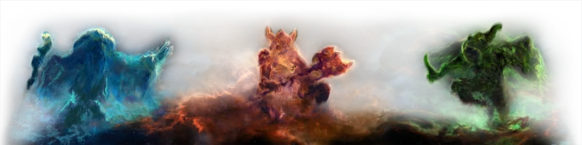

|
|
The Elder Scrolls V Skyrim: НавыкиНавыкиВ The Elder Scrolls V: Skyrim персонаж может развивать 18 различных навыков. Развитие навыков характеризует, насколько хорошо персонаж справляется с выполнением той или иной задачи. Рост навыка происходит по мере его использования и ведёт к росту уровня персонажа. Стартовый уровень развития большинства навыков составляет 15, хотя уже при генерации персонажа выбор расы определяет 6 навыков, которые получают стартовые бонусы (пять навыков + 5 единиц, один навык + 10). С Нирна, помимо прочих, видны три созвездия, Воина, Мага и Вора, тесно связанных с находящимися в Скайриме Камнями-хранителями. Камни Воина, Вора и Мага находятся недалеко от Ривервуда. Они даруют благословения, именуемые «Знаками». Любой желающий может принять их, прикоснувшись к одному из древних камней. Примечание: в оригинальной игре при активации какого-либо Камня-хранителя, предыдущий эффект заменяется новым. В официальном дополнении Dawnguard можно активировать ещё один Камень, если экипирована этериевая корона, получив таким образом два эффекта. Ветка вора лучше подойдёт для тех, кто любит действовать незаметно и тихо. Прокачать её можно у представителей Гильдии воров или Темного братства. Ветка воина лучше подойдёт для тех, кто любит битвы и кровь. Прокачать её можно у представителей Соратников. Ветка мага лучше подойдёт для тех, кто любит действовать из далека и жарить всех магией. Прокачать её можно у представителей Коллегии магов.  |